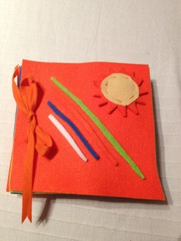
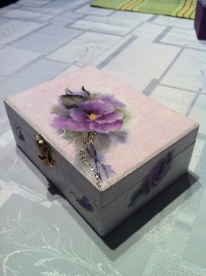

Unutar 10-satnog redovitog programa provodimo program predškole, a posebne programe za koje imamo rješenje o suglasnosti Ministarstva znanosti i obrazovanja provodimo prema planu i organizaciji vrtića.
Glazbeni
Likovno-dramski
Engleski jezik
Sportski
Za darovite
Eko program
Glazbeni program
Glazba je idealno područje za poticanje pozitivnih emocija, osjećaja pripadnosti i zajedništva te važan poticaj kreativnosti. Pjevajući, svirajući i slušajući primjerenu glazbu dijete obogaćuje svoj osjećajni svijet.
Djeca upoznaju osnovne elemente glazbenog jezika i prepoznaju glazbala po obliku i zvuku, u većem opsegu nego u redovitom programu.
Rano učenje engleskog jezika
Dodatni program za djecu od 3 godine do polaska u školu. Engleski se uči situacijski, povezano s aktivnostima koje djeca i odgojitelji provode, uz dječje pjesmice s pokretima.
Djeca upoznaju likovne elemente, različita likovno-tehnička sredstva i tehnike te djela poznatih autora, i uče na svoj način promatrati svijet oko sebe.
U dramskom dijelu upoznaju različite vrste lutaka, izrađuju lutke i scenske elemente od neoblikovanog materijala te ih koriste u igri i glumi. Tako razvijaju govor, komunikaciju i samopouzdanje.


Sportski program
Dio programa uklopljen je u redoviti program, dio se provodi kroz dodatne aktivnosti, a dio izvan vrtića u suradnji sa sportskim objektima u Zagrebu.
Besplatna plesno-sportska igraonica za djecu od navršene 2 godine
Univerzalna sportska škola za djecu od 3 godine do polaska u školu
Izvanvrtićke aktivnosti, ovisno o interesu roditelja:
rolanje
plivanje
klizanje
skijanje
jahanje
vožnja bicikla bez pomoćnih kotača
poligon s prometnim znakovima
Program predškole
Obuhvaća svu upisanu djecu u godini pred polazak u školu. Program je odobren od Ministarstva znanosti, obrazovanja i sporta i provodi se svakodnevno, u opsegu koji propisuje zakon.
Planira se tjedno, prema potrebama svakog djeteta. Provode ga odgojitelji uz stručnu pomoć i superviziju pedagoga, psihologa i logopeda. Na kraju dijete dobiva Potvrdu o završenoj predškoli za upis u školu.
Program za darovite
Jedan od posebnih programa za koje vrtić ima rješenje o suglasnosti Ministarstva znanosti i obrazovanja.
Eko program
Također posebni program s rješenjem o suglasnosti Ministarstva, proveden prema planu i organizaciji vrtića.
ZajutrakDoručakRučakUžina 1.Užina 2.Svježe voćeVoda je najbolje pićeZajutrakDoručakRučakUžina 1.Užina 2.Svježe voćeVoda je najbolje piće
Hrana i zdravlje
Dobre prehrambene navike od najranije dobi.
Za vrijeme redovitog programa djeci nudimo 6 obroka: zajutrak, doručak, ručak, prvu i drugu užinu te obrok svježeg voća.
6obroka u redovitom programu
2užine uz glavne obroke
Jelovnici su izvješeni u garderobama, a šaljemo ih i e-poštom svim roditeljima.
Što uzimamo u obzir
potrebe djeteta za energijom, hranjivim tvarima, vitaminima i mineralima
socijalne i razvojne aspekte hranjenja: druženje, motoriku, stjecanje navika
prevenciju bolesti koje se kasnije vežu uz nepravilnu prehranu
Savjet roditeljima
Ne odgađajte uvođenje krute hrane nakon prve godine i ne miksajte hranu predugo: tako se usporava razvoj žvakanja, a to kasnije može usporiti i razvoj govora. To je najčešći problem o kojem razgovaramo s roditeljima pri upisu.
Najbolje piće je voda
Uz vodu preporučujemo svježe cijeđene sokove i svježe čajeve, u ograničenim količinama. Što manje slatkiša, grickalica, brze hrane i gaziranih pića.
EU projekti
Vrijeme nije breme.
Projekt Dječjeg vrtića Nemo sufinancirala je Europska unija iz Europskog socijalnog fonda. Kroz njega su uvedeni smjenski rad i produženi boravak, nabavljena je didaktička oprema, a odgojitelji i stručni suradnici sudjelovali su na 12 stručnih edukacija.
04/2018 – 03/2021razdoblje provedbe (30 mjeseci)
2.930.685,25 knukupna vrijednost projekta
2.491.082,46 kniznos EU potpore
Vrtić je i partner udruge Baza za razvoj u STEM projektu, uz potporu Europskog socijalnog fonda plus. Sadržaj objava isključiva je odgovornost Dječjeg vrtića Nemo.
Želite da vaše dijete bude dio priče?
Pogledajte kako izgleda upis i koje dokumente trebate.